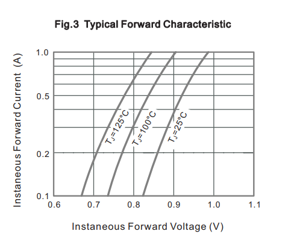
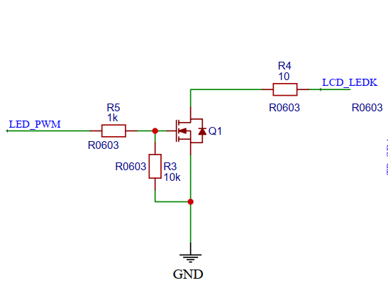
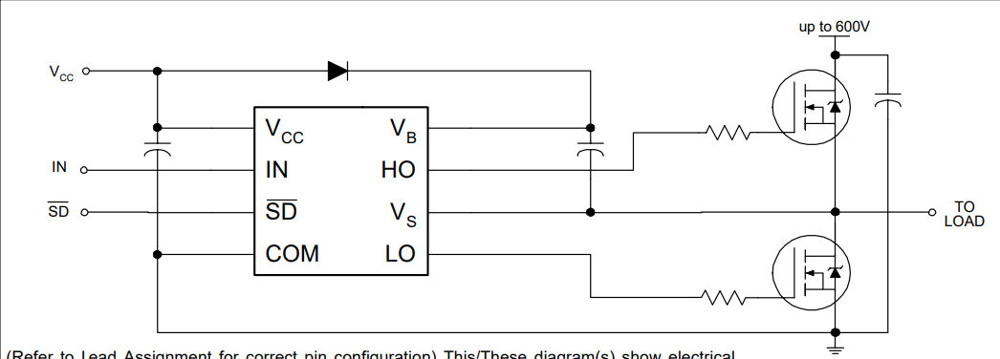
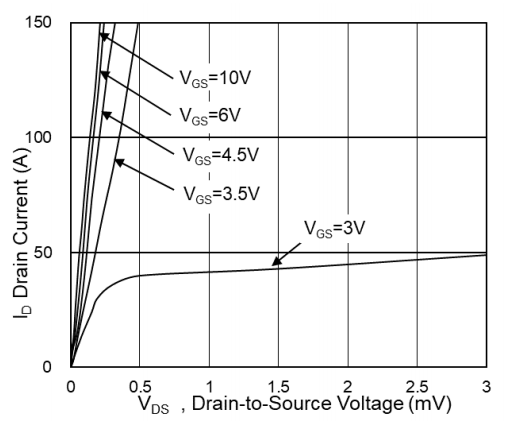
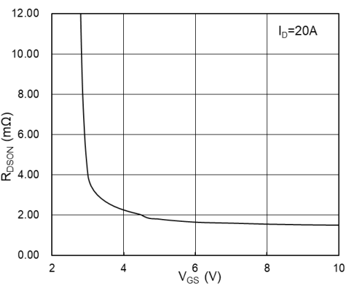

半导体器件总结
二极管总结
二极管作为电路中常用的半导体器件，其实际使用的过程中有许多需要注意的地方是当时模电课本中没有学到的。
1.二极管的压降问题
在模电课本中，我们总是理想的认为二极管的导通压降为0.7V(硅管)，但是实际使用时完全不是这样！
二极管的导通压降与其通过的电流是正相关的。可以简单地理解为电流越大，形成的PN结越大，压降就越大。
而二极管的电流一般通过与其串联的电阻来决定，如果二极管与电容串联，那么他的电流几乎为0，只有几μA，但是还是会有一点压降，具体多少可以仿真来看。
一般电压与电流的关系要仔细看数据手册，比如这个：

或者可以在proteus中选择一样型号的二极管，来仿真。
三极管总结
三极管属于电流控制电流器件，通过基极的电流可以控制集电极的电流，且直流、交流电流都能放大。但实际使用时，其电流放大倍数并不是固定的。与集电极电流Ic和温度等都有关系。
MOS管总结
0.MOS管在直流的时候基本上就是当开关用的，电压控制电流指的是“电压控制能通过的漏极的最大电流”，但基本上不会用这个来计算，因为实际漏极的工作电流由负载决定，一般都小于最大漏极电流。
1.PWM控制NMOS的电路分析
这个图是GearlessWatch的LCD的亮度调节电路。
关于PWM是如何调节亮度的，我之前的错误理解：通过调节PWM的占空比来调节Vgs的平均值进而改变NMOS的最大Id，从而控制LCD的阴极电流。
这个想法有很多地方都对不上，比如当PWM占空比很低时，那么Vgs就很低，将低于Vgs(th)，按理说NMOS不会导通，但实际上只有PWM占空比为0时，LCD才会真的熄灭。
正确理解：因为PWM那个引脚输出的电压只可能是3.3V或者0V，所以当输出高电平时，NMOS是完全打开的，所以LED的电路导通。NMOS实际上就是一个开关，而PWM占空比控制了它打开的时间，从而控制了肉眼看LCD的亮度。
虽然之前用电压表测输出PWM引脚的电压是随着其占空比变化的，但实际上IO输出的电压并不是测出来的那个示数，电表测量示数只是它的平均值。因此NMOS的Vgs的实际值并不是电压表测的那个平均值，而是IO输出的电压值。
2.电机驱动的H桥电路
这个图是IR2104驱动半桥的电路，对于单片机的PWM是如何调解电机转速的，我之前的理解也有很大的误区。
我之前的错误理解：通过调节PWM的占空比来调节Vgs的平均值进而改变NMOS的最大Id，从而控制电机的转速。
通过NMOS的资料可以看到：
Id在Vgs只有几V的情况下就能达到几十A，所以基本上能通过的Id是一直大于电机当前负载所需要的电流的。“通过最大漏极电流限制电机的工作”是很错误的一种理解。
虽然较小的Vgs就能通过较大的Id，但Vgs还是越大越好，因为Rdson随着Vgs的增大而减小，NMOS自身的损耗将减小。
正确理解：因为PWM那个引脚经过栅极驱动IC后输出的电压只可能是VCC或者0V，所以当输出高电平时，NMOS是完全打开的，所以电机的回路导通。NMOS实际上就是一个开关，而PWM占空比控制了它打开的时间，从而控制了一段很短的时间内电机的平均转速即我们肉眼所见转速。